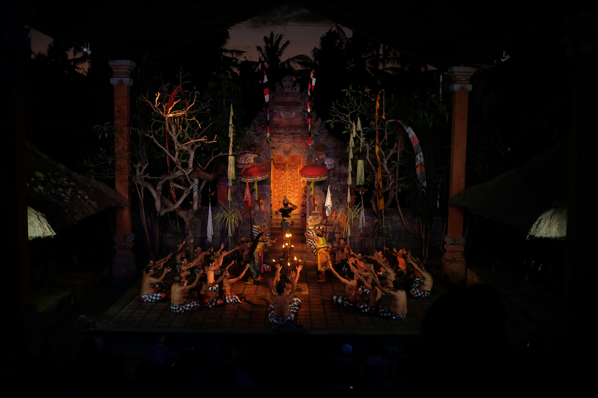
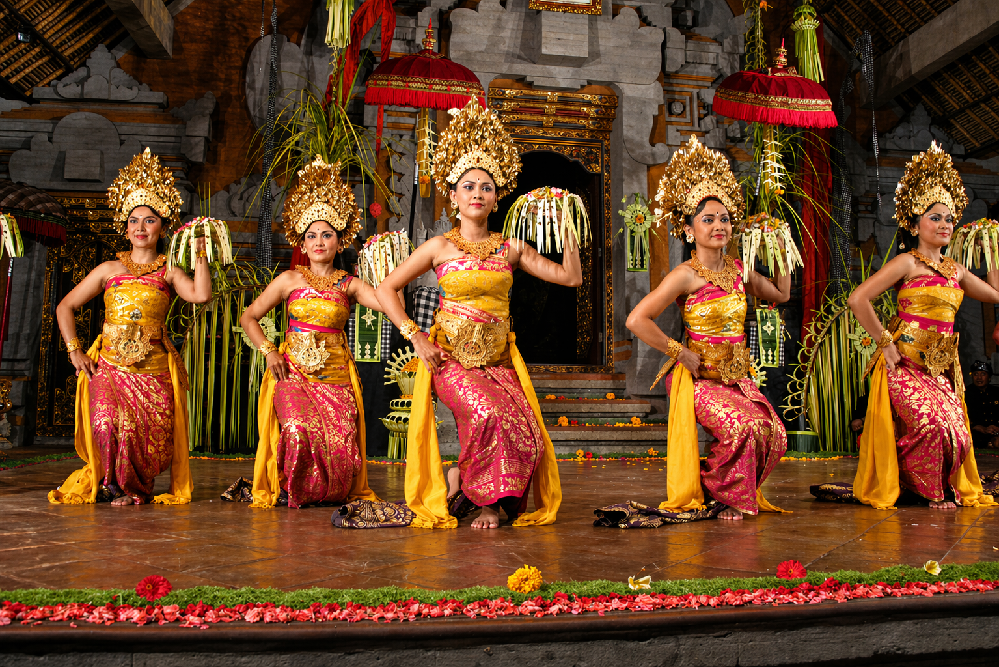
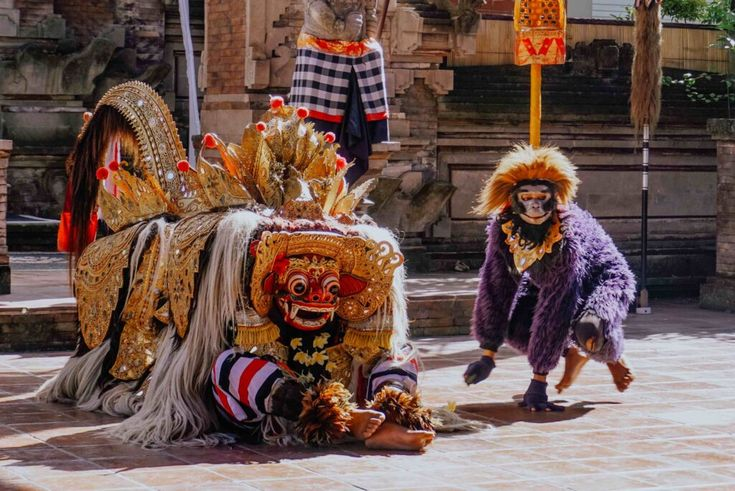
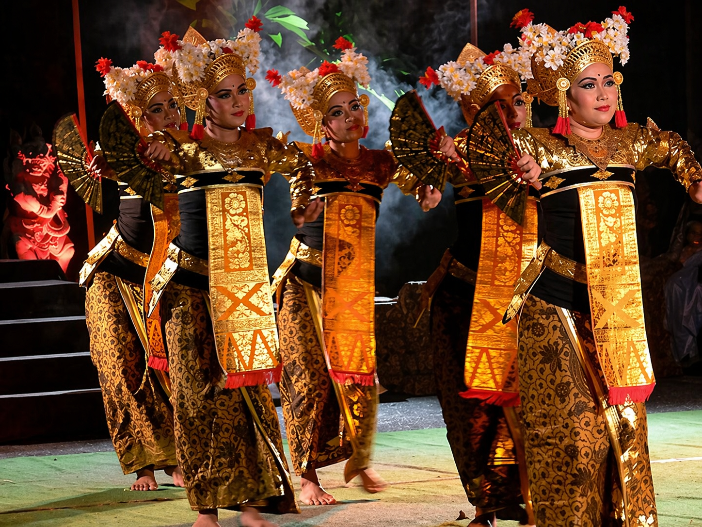
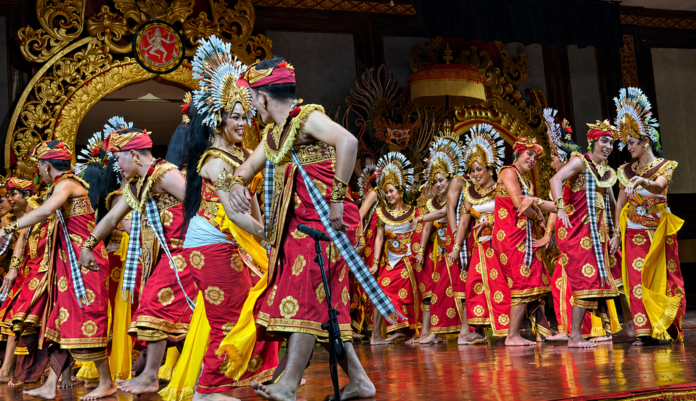

Tari Kecak
Tari Kecak merupakan salah satu tarian Bali yang paling dikenal di dunia. Puluhan penari duduk melingkar sambil menciptakan irama suara “cak” tanpa alat musik.
Pertunjukan ini sangat menarik secara visual dan sering menjadi konten promosi wisata budaya Bali.
Potensi Digital: Cocok untuk video pendek dan reels.

Tari Pendet
Tari Pendet dikenal sebagai simbol penyambutan dan keramahan masyarakat Bali. Gerakannya lembut, anggun, dan penuh kehangatan.
Visual bunga, kostum, dan ekspresi penari sangat menarik untuk media sosial.
Potensi Digital: Cocok untuk konten edukasi dan promosi.

Tari Barong
Tari Barong menghadirkan kisah pertarungan antara kebaikan dan kejahatan. Kostum Barong yang megah menjadikannya sangat ikonik.
Cerita dan visual yang kuat membuat tarian ini mudah menarik perhatian penonton.
Potensi Digital: Menarik untuk storytelling video.

Tari Legong
Tari Legong merupakan tarian klasik Bali yang terkenal dengan gerakan halus, ekspresi mata, dan kostum elegan.
Tarian ini memancarkan keindahan seni tradisional yang berkelas.
Potensi Digital: Cocok untuk visual premium dan branding budaya.

Tari Janger
Tari Janger menampilkan suasana ceria, energik, dan penuh kebersamaan. Dibawakan berkelompok oleh penari pria dan wanita.
Nuansa semangatnya sangat dekat dengan generasi muda dan konten modern.
Potensi Digital: Cocok untuk konten komunitas dan hiburan budaya.